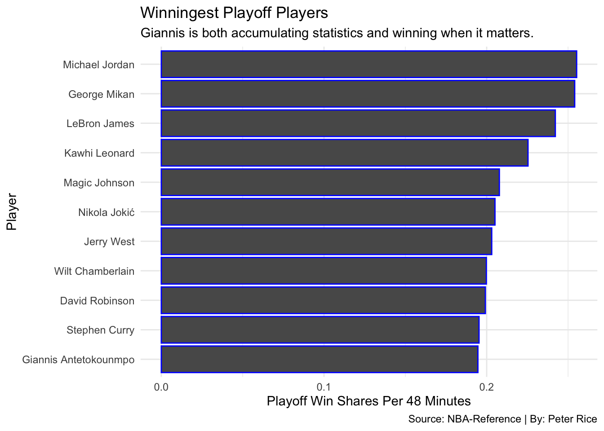

Since being drafted 15th overall by the Milwaukee Bucks, Giannis Antetokounmpo has turned into a superstar from very humble beginning in Greece. He won the Most Improved Player Award in 2017, and back-to-back Most Valuable Player honors the following years. Along with his MVP award, he was also named the NBA Defensive Player of the Year in 2020, becoming only the third player after Michael Jordan and Hakeem Olajuwon to win both awards in the same season. In 2021 Antetokounmpo led the Bucks to their first Championship since 1971 and was named the Finals MVP. The same year, he was announced as one of the league’s greatest 75 players of all-time by being named to the NBA’s 75th Anniversary Team.
Barring injury, Giannis is on a trajectory to become one of the league’s best of all time. Winning is what matters most, so we need to see if his scoring and stats help his team win as much as other great players have.
Code
ws2 <- ws %>%top_n(11,`WS/48` ) ggplot() +geom_bar(data=ws2, aes(x=reorder(Player, `WS/48`), weight=`WS/48`), color ="blue") +coord_flip() +theme_minimal() +labs( x="Player",y="Playoff Win Shares Per 48 Minutes", title="Winningest Playoff Players", subtitle="Giannis is both accumulating statistics and winning when it matters.", caption="Source: NBA-Reference | By: Peter Rice" )

Efficiency is also key when having a prolonged career where you are the primary option. Giannis is a much worse shooter than both Jordan and especially LeBron, but is able to make up the difference by how dominant he is inside the restricted area.
In conclusion it may be difficult to calculate if someone can be the greatest of all time, but we can clearly see that Giannis is right up there with the two players commonly referred to as the g.o.a.t with where he is in his career. He won a championship younger than those two and is on his way for more hardware.